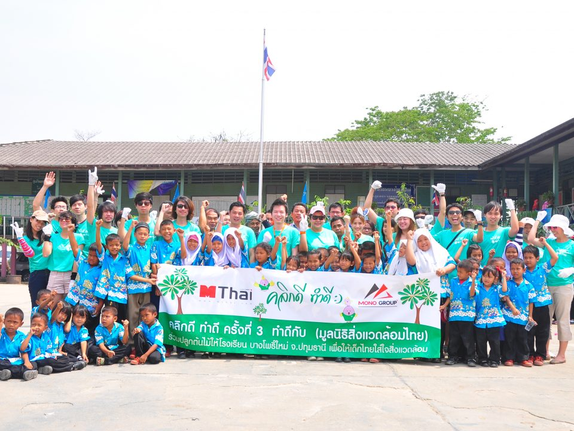

Economic Benefits

Tourism has had numerous positive impacts on the Thai economy. One of the significant benefits is job creation, providing employment opportunities for people across various sectors, including hospitality, transportation, retail, and handicrafts. The influx of tourists also leads to increased foreign exchange earnings, contributing to the country's balance of payments. Furthermore, the growth of tourism has fueled infrastructure development, such as the expansion of airports, roads, and hotels, benefiting both tourists and locals alike.
Socio-cultural Impacts
The interaction between tourists and locals has brought about notable changes in Thai society. The influence of Western culture, brought by tourists, has resulted in the adoption of foreign customs and practices. This cultural exchange has enriched Thai society, fostering a diverse and multicultural environment. While embracing new influences, Thailand has successfully preserved its rich traditions and cultural heritage, allowing tourists to experience the authentic charm of the country.
Environmental Concerns
Mass tourism has presented environmental challenges for Thailand. The increase in visitor numbers has led to deforestation, particularly in areas with high demand for accommodations and infrastructure development. Pollution, both land and water-based, has become a pressing issue, impacting the quality of air, water sources, and marine ecosystems. Coral reef degradation due to unsustainable tourism practices, such as irresponsible snorkeling and diving, has also been a concern.
Efforts to Mitigate Environmental Issues
The Thai government, along with local communities and environmental organizations, has implemented initiatives to mitigate the environmental impacts of tourism. These include stricter regulations on waste management, promoting eco-friendly practices, and encouraging sustainable tourism activities. Efforts are being made to raise awareness among tourists and locals about the importance of preserving Thailand's natural resources and biodiversity. Community-led conservation projects and the establishment of marine protected areas aim to protect fragile ecosystems and promote responsible tourism.